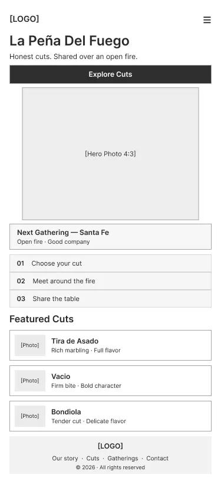
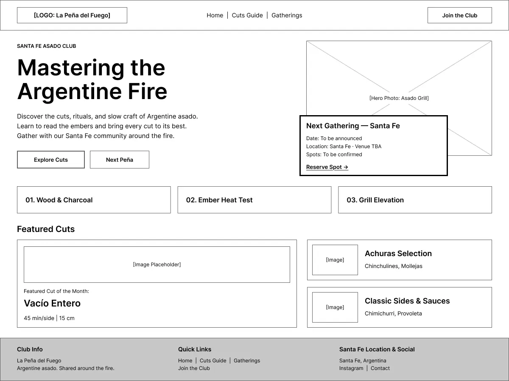

"How long should I cook a whole vacio, and what ember heat level does it need?"
Answered through the interactive cuts guide on the home and catalog views, displaying exact cooking times per side, grill elevation, and preparation notes.
Website Architecture, Visual Identity, and Responsive Layout Plan
In Argentine culture, a peña is a social gathering centered around shared food, conversation, and tradition. Pairing it with del Fuego (of the Fire) establishes an immediate identity rooted in traditional wood and charcoal grilling in Santa Fe, Argentina.
Representative domain: lapenadelfuego.com.ar
La Peña del Fuego serves as a digital hub for preserving and sharing traditional Argentine asado techniques in Santa Fe. The website will provide:
Answered through the interactive cuts guide on the home and catalog views, displaying exact cooking times per side, grill elevation, and preparation notes.
Answered directly on the home page spotlight card and through the dedicated membership and event registration form.
Answered by saving favorite cuts in browser storage so visitors can quickly review their personal selection on mobile devices.
This planning document exclusively uses the five-color palette designed for the final website, balancing warm editorial readability with high-contrast accents.
#FAF6F0
Main page background used across all views to provide warm contrast without eye strain.
#EFE7DC
Card containers, technical cut sheets, and secondary callout surfaces.
#7A1C1C
Primary headings, header background, structural dividers, and active navigation states.
#C84B11
Primary call-to-action buttons, category badges, and spotlight borders.
#1E1B18
Body copy, technical specifications, form labels, and footer background.
El arte del fuego lento y la buena mesa.
Applied to main titles (h1, h2, h3) and hero statements to evoke classic Argentine parrilla menus with an editorial feel.
Clean, legible prose for preparation guides, club history, navigation links, and registration forms.
Applied to all paragraphs, list items, form controls, and interactive buttons across desktop and mobile viewports.
TEMP: MEDIUM EMBER | TIME: 45 MIN / SIDE | HEIGHT: 15 CM
Applied to cooking durations, grill elevation measurements, ember heat indicators, and event dates.
Black-and-white structural blueprints for the home page (index.html) following an asymmetric editorial split hero and modular cut spotlight layout.

